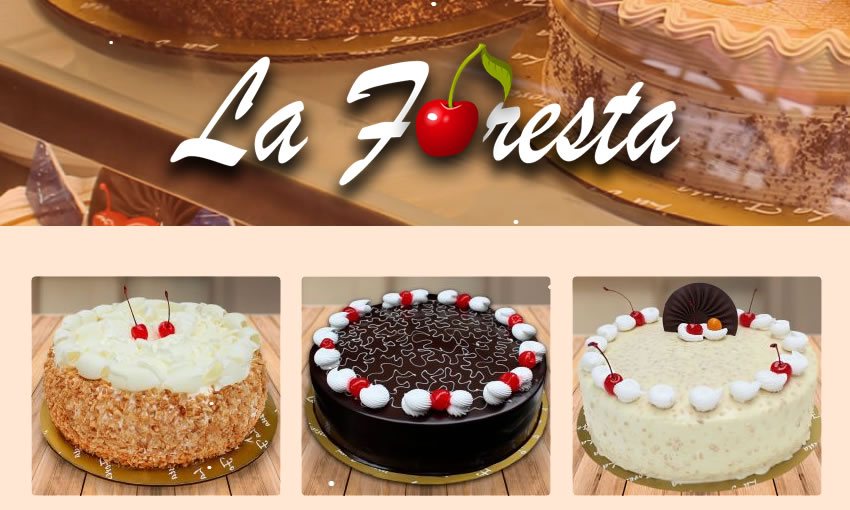
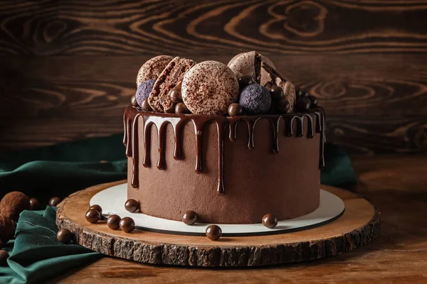
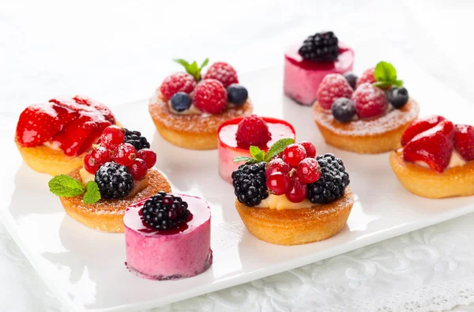
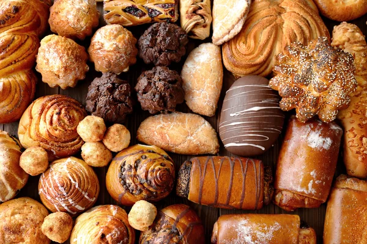

En La Foresta elaboramos tortas, postres y bocaditos personalizados con mucho cariño para cumpleaños, aniversarios y celebraciones.
La Foresta es una pastelería artesanal dedicada a la elaboración y venta de tortas, pasteles, bocaditos y postres, además de productos complementarios como café, sándwiches y helados.
La pastelería fue creada aproximadamente en el año 2014 por una familia emprendedora, con el objetivo de ofrecer productos innovadores y diferenciados en su zona. Con el paso del tiempo, el negocio fue creciendo gracias a la aceptación del público.
Actualmente, La Foresta mantiene su tradición familiar y destaca por la personalización de tortas para cumpleaños, aniversarios y celebraciones especiales, ofreciendo productos de calidad con un estilo casero.
Explorar productos
Elige tus favoritos y personaliza tu pedido

Elige el sabor, tamaño y diseño para tu celebración especial.

Deliciosos postres preparados con ingredientes de calidad.

Ideales para reuniones, cumpleaños y eventos familiares.
Realiza tu pedido personalizado y separa tu fecha de entrega.
Hacer pedido